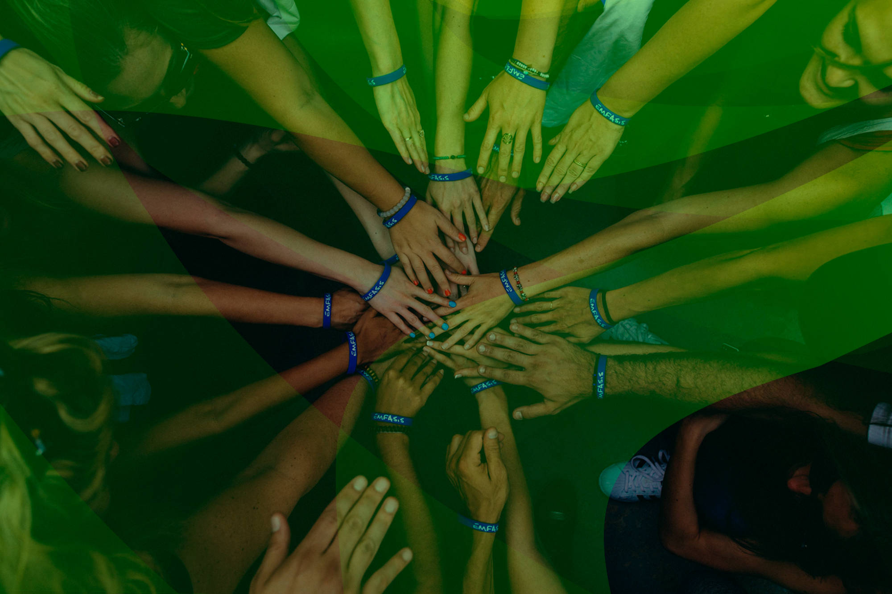
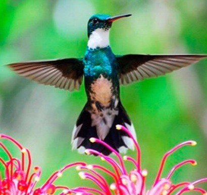
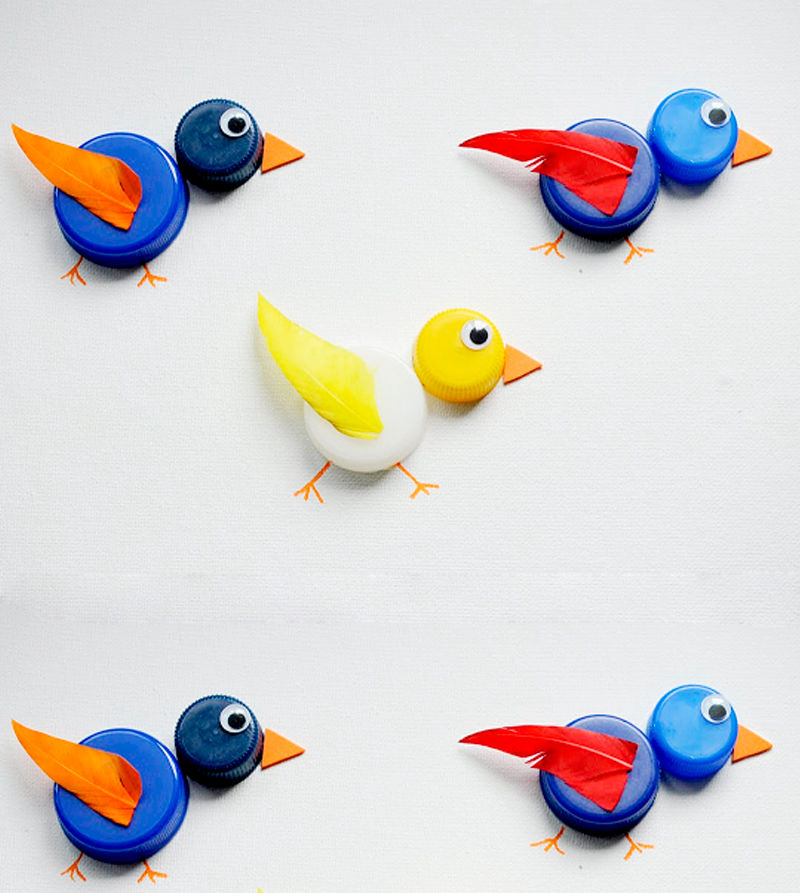
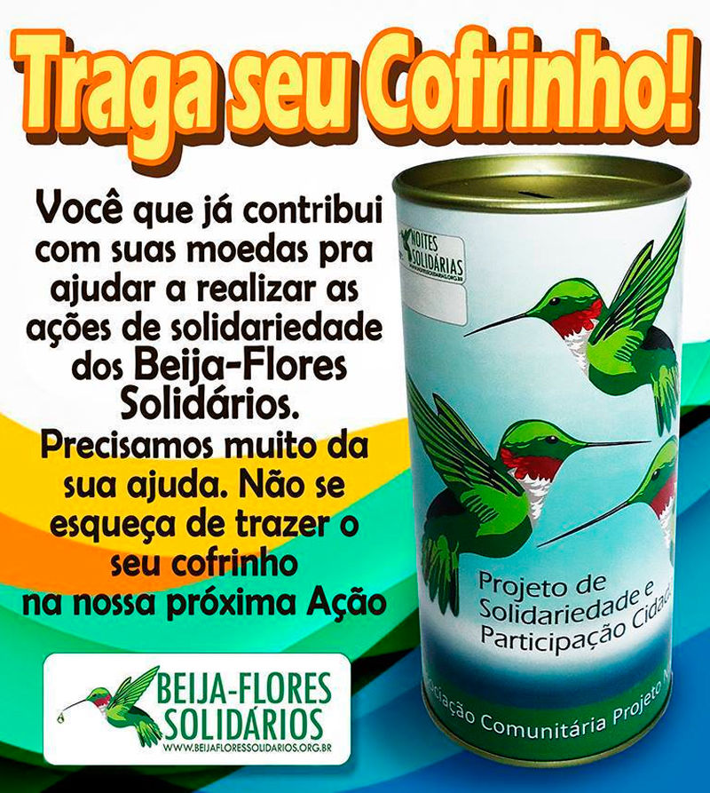
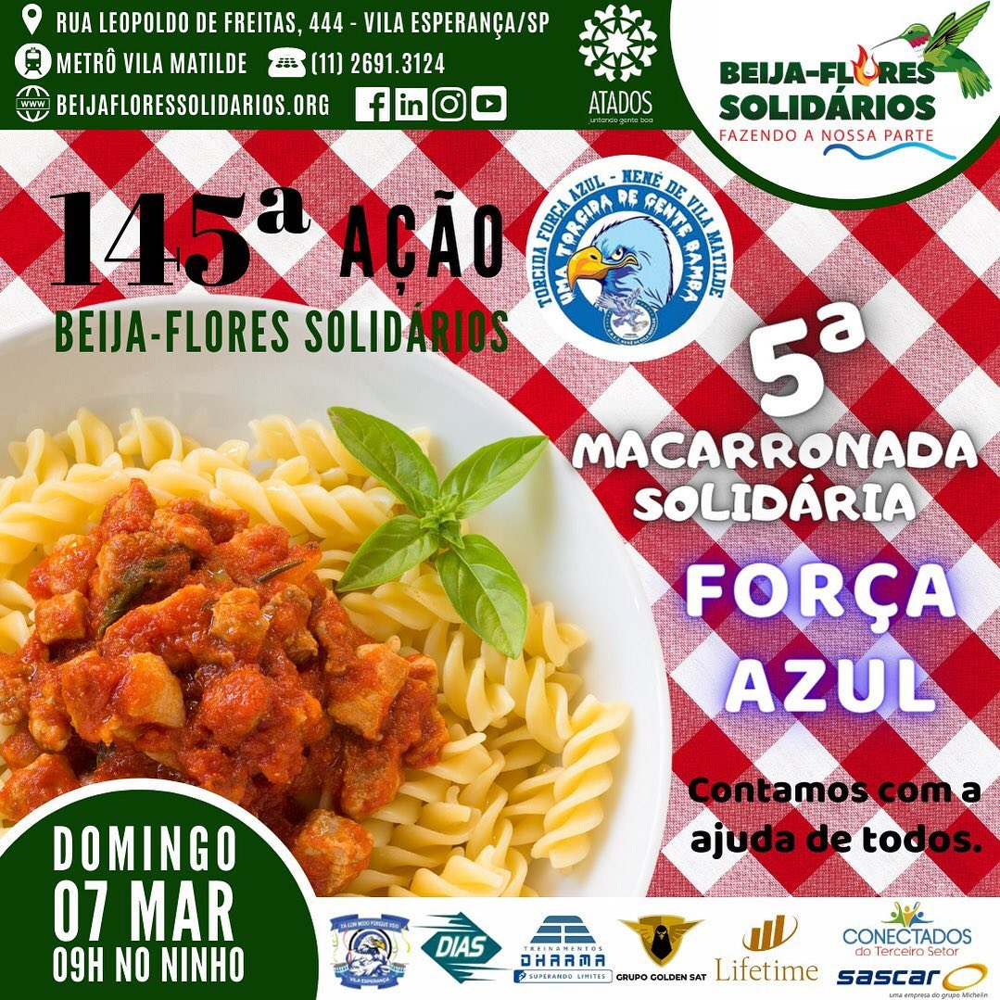
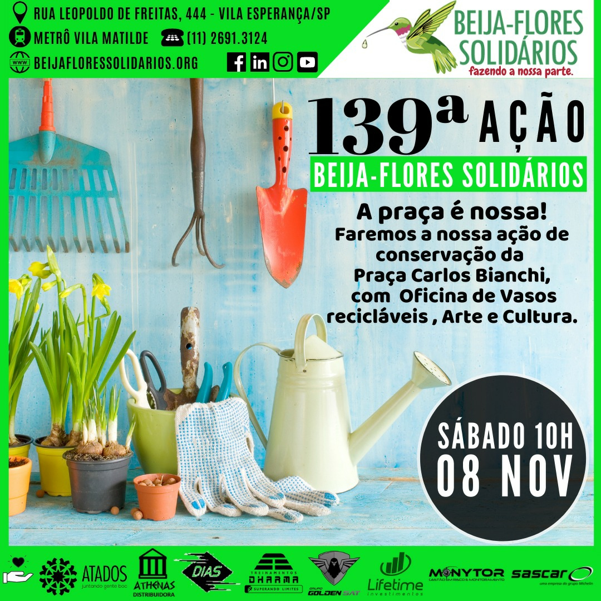

01 / Alimentar
01 / AlimentarO cuidado começa pelo essencial.
Apoio alimentar e atenção às necessidades de pessoas em situação de vulnerabilidade.
Segurança alimentar · Capacitação · Voluntariado
Alimento, acolhimento e oportunidades para pessoas em situação de vulnerabilidade social em São Paulo.

Tudo começou com o Projeto Noites Solidárias e a atenção às pessoas em situação de rua no centro de São Paulo.
Essa iniciativa se tornou os Beija-Flores Solidários. Ao apoio com alimentos e itens essenciais, somaram-se caminhos de capacitação e convivência na comunidade.
Em 2019, a reforma da sede, o nosso Ninho, abriu espaço para ampliar cursos gratuitos e práticas esportivas com o apoio de mantenedores.
Conheça nossa trajetória completa ↗
Uma causa que reúne pessoas para enfrentar a fome e abrir caminhos de reinserção social.
Nossa atuação conecta necessidades básicas, aprendizado e participação da comunidade.
01 / AlimentarApoio alimentar e atenção às necessidades de pessoas em situação de vulnerabilidade.
Iniciativas de formação que aproximam a comunidade de novas oportunidades.
 03 / Mobilizar
03 / MobilizarVoluntários e apoiadores somam tempo, conhecimento e recursos à causa.
É assim que chamamos nossa sede na Vila Esperança. Um ponto de encontro entre quem precisa de apoio e quem deseja contribuir.
Além da assistência, nossa trajetória reúne capacitação, atividades comunitárias e campanhas de apoio. As imagens ao lado pertencem ao arquivo de colaboração da instituição; consulte a equipe sobre as iniciativas em andamento.
Conheça melhor o Ninho ↗

Escolha um caminho para começar a participar.
Uma seleção do arquivo institucional. São registros históricos, não convites para novos eventos.

A 145ª ação registrou a quinta Macarronada Solidária, com a Força Azul.

Conservação da Praça Carlos Bianchi, com oficinas de vasos recicláveis, arte e cultura.
O site original reúne apresentações em vídeo. Assista em uma nova aba para conhecer esse material.
Doe seu tempo, compartilhe conhecimento ou apoie nossas ações. Entre em contato para descobrir como participar.
 Quero ser voluntário
Quero ser voluntário